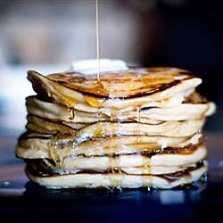

Pancakes

Description
This is a recipe for making pancakes
Ingredients
- 2 medium eggs
- 150g plain flour
- 120 ml semi skimmed milk
- 30g caster sugar
- 20g butter
Steps
- Melt the butter, add to the milk and beaten eggs. Whisk together.
- Add flour and sugar to a mixing bowl.
- Add the mixture to the bowl. Whisk until lumps are gone.
- Leave to set for 5 minutes while pan heats up.
-
Ladle mixture into the pan. Cook until bubbles appear in mixture, then flip
over for 1 minute.
- Remove pancakes.
- Eat pancakes.
- Lament that you have no more pancakes.